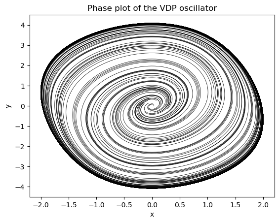
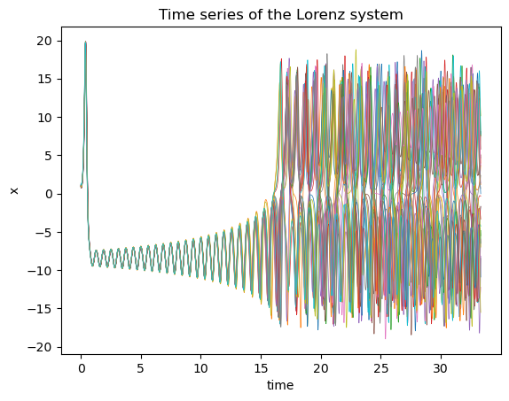
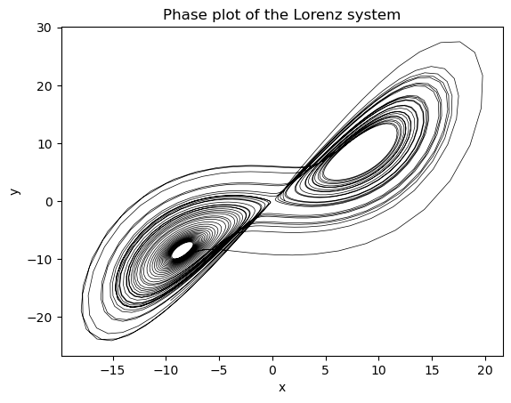
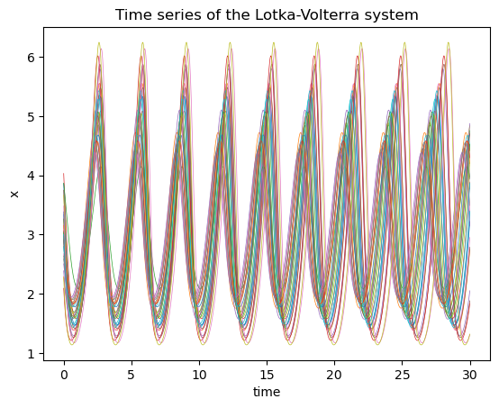
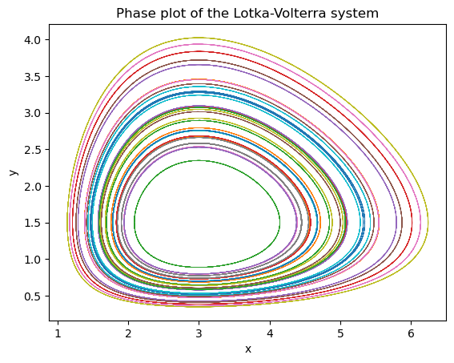

class VDP(nn.Module):
"""
Define the Van der Pol oscillator as a PyTorch module.
"""
def __init__(self,
mu: float, # Stiffness parameter of the VDP oscillator
):
super().__init__()
self.mu = torch.nn.Parameter(torch.tensor(mu))
def forward(self,
t: float, # time index
state: torch.TensorType, # state of the system first dimension is the batch size
) -> torch.Tensor:
x = state[:, 0]
y = state[:, 1]
dX = self.mu*(x-1/3*x**3 - y)
dY = 1/self.mu*x
dfunc = torch.zeros_like(state)
dfunc[:, 0] = dX
dfunc[:, 1] = dY
return dfunc
def __repr__(self):
return f" mu: {self.mu.item()}"Models
This shows how to define torch modules for differential equations
Define the VDP Oscillator
We can define a differential equation system using the torch.nn.Module class where the parameters are created using the torch.nn.Parameter declaration. This lets pytorch know that we want to accumulate gradients for those parameters. We can also include static parameters by just not wrapping them with this declaration.
The classic VDP oscillator is a nonlinear oscillator with a single parameter \(\mu\). We will recover this parameter from simulated data using the training module.
VDP
VDP (mu:float)
Define the Van der Pol oscillator as a PyTorch module.
| Type | Details | |
|---|---|---|
| mu | float | Stiffness parameter of the VDP oscillator |
Let’s see how we can integrate this model using torchdiffeq methods
vdp_model = VDP(mu=0.5)
ts = torch.linspace(0,30.0,1000)
# Create a batch of initial conditions
batch_size = 30
initial_conditions = torch.tensor([0.01, 0.01]) + 0.2*torch.randn((batch_size,2))
sol = odeint(vdp_model, initial_conditions, ts, method='dopri5').detach().numpy()
# Check the solution
plt.plot(sol[:,:,0], sol[:,:,1], color='black', lw=0.5);
plt.title("Phase plot of the VDP oscillator");
plt.xlabel("x");
plt.ylabel("y");
The solution comes back as a torch tensor with dimensions (time_points, batch, dynamical_dimension).
sol.shape(1000, 30, 2)Define the Lorenz system
This defines a the famous Lorenz differential equations which give chaotic dynamics for the default parameter values as shown.
class Lorenz(nn.Module):
"""
Define the Lorenz system as a PyTorch module.
"""
def __init__(self,
sigma: float =10.0, # The sigma parameter of the Lorenz system
rho: float=28.0, # The rho parameter of the Lorenz system
beta: float=8.0/3, # The beta parameter of the Lorenz system
):
super().__init__()
self.model_params = torch.nn.Parameter(torch.tensor([sigma, rho, beta]))
def forward(self, t, state):
x = state[:,0] #variables are part of vector array u
y = state[:,1]
z = state[:,2]
sol = torch.zeros_like(state)
sigma, rho, beta = self.model_params #coefficients are part of vector array p
sol[:,0] = sigma*(y-x)
sol[:,1] = x*(rho-z) - y
sol[:,2] = x*y - beta*z
return sol
def __repr__(self):
return f" sigma: {self.model_params[0].item()}, rho: {self.model_params[1].item()}, beta: {self.model_params[2].item()}"Lorenz
Lorenz (sigma:float=10.0, rho:float=28.0, beta:float=2.6666666666666665)
Define the Lorenz system as a PyTorch module.
| Type | Default | Details | |
|---|---|---|---|
| sigma | float | 10.0 | The sigma parameter of the Lorenz system |
| rho | float | 28.0 | The rho parameter of the Lorenz system |
| beta | float | 2.6666666666666665 | The beta parameter of the Lorenz system |
This shows how to integrate this system and plot the results. You can see that close iniial conditions end up very far apart later in time
lorenz_model = Lorenz()
ts = torch.linspace(0,50.0,3000)
# Create a batch of initial conditions (batch_dim, state_dim) as small perturbations around one value
initial_conditions = torch.tensor([[1.0,0.0,0.0]]) + 0.10*torch.randn((30,3))
sol = odeint(lorenz_model, initial_conditions, ts, method='dopri5').detach().numpy()
# Check the solution
plt.plot(ts[:2000], sol[:2000,:,0], lw=0.5);
plt.title("Time series of the Lorenz system");
plt.xlabel("time");
plt.ylabel("x");
The solution comes back as a tensor with dimension (timepoints, batch, dynamical_dim).
sol.shape(3000, 30, 3)Here we show the famous butterfly plot for the first set of initial conditions in the batch.
plt.plot(sol[:,0,0], sol[:,0,1], color='black', lw=0.5);
plt.title("Phase plot of the Lorenz system");
plt.xlabel("x");
plt.ylabel("y");
Define the Lotka Volterra Predator Prey equations
As another example we create a module for the predator-prey equations.
class LotkaVolterra(nn.Module):
"""
The Lotka-Volterra equations are a pair of first-order, non-linear, differential equations
describing the dynamics of two species interacting in a predator-prey relationship.
"""
def __init__(self,
alpha: float = 1.5, # The alpha parameter of the Lotka-Volterra system
beta: float = 1.0, # The beta parameter of the Lotka-Volterra system
delta: float = 3.0, # The delta parameter of the Lotka-Volterra system
gamma: float = 1.0 # The gamma parameter of the Lotka-Volterra system
) -> None:
super().__init__()
self.model_params = torch.nn.Parameter(torch.tensor([1.5,1.0,3.0,1.0]))
def forward(self, t, state):
x = state[:,0] #variables are part of vector array u
y = state[:,1]
sol = torch.zeros_like(state)
alpha, beta, delta, gamma = self.model_params #coefficients are part of vector array p
sol[:,0] = alpha*x - beta*x*y
sol[:,1] = -delta*y + gamma*x*y
return sol
def __repr__(self):
return f" alpha: {self.model_params[0].item()}, beta: {self.model_params[1].item()}, delta: {self.model_params[2].item()}, gamma: {self.model_params[3].item()}"LotkaVolterra
LotkaVolterra (alpha:float=1.5, beta:float=1.0, delta:float=3.0, gamma:float=1.0)
The Lotka-Volterra equations are a pair of first-order, non-linear, differential equations describing the dynamics of two species interacting in a predator-prey relationship.
| Type | Default | Details | |
|---|---|---|---|
| alpha | float | 1.5 | The alpha parameter of the Lotka-Volterra system |
| beta | float | 1.0 | The beta parameter of the Lotka-Volterra system |
| delta | float | 3.0 | The delta parameter of the Lotka-Volterra system |
| gamma | float | 1.0 | The gamma parameter of the Lotka-Volterra system |
| Returns | None |
Integrate and make the same plots as the other systems
lv_model = LotkaVolterra()
ts = torch.linspace(0,30.0,1000)
# Create a batch of initial conditions (batch_dim, state_dim) as small perturbations around one value
initial_conditions = torch.tensor([[3,3]]) + 0.50*torch.randn((30,2))
sol = odeint(lv_model, initial_conditions, ts, method='dopri5').detach().numpy()
# Check the solution
plt.plot(ts, sol[:,:,0], lw=0.5);
plt.title("Time series of the Lotka-Volterra system");
plt.xlabel("time");
plt.ylabel("x");
plt.plot(sol[:,:,0], sol[:,:,1], lw=0.5);
plt.title("Phase plot of the Lotka-Volterra system");
plt.xlabel("x");
plt.ylabel("y");